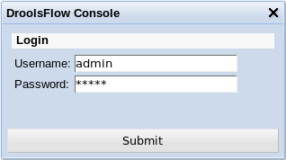
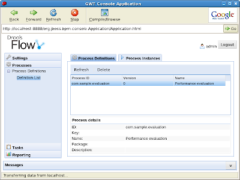
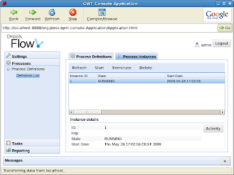
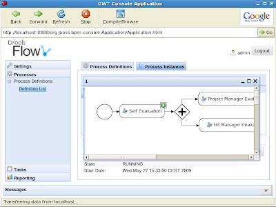
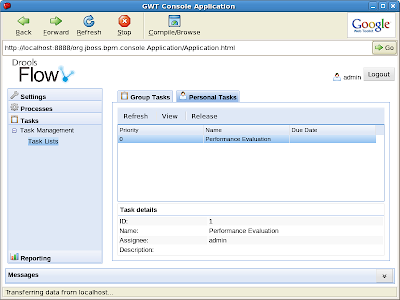
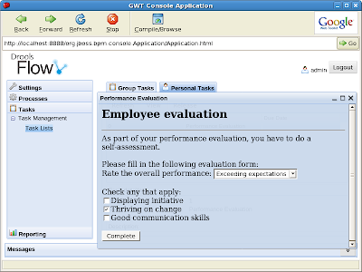

Drools Flow 5.1 Preview 1: Web console
Now that Drools 5 has been released, we’re already working on the new features for the next release. I’ll be adding some blog entries over the next few weeks about what we are planning to do for Drools Flow, and this is the first one.
Web-based management console for processes
Most of the work so far regarding Drools Flow has focused on creating a runtime for executing processes and the “hooks” to integrate that into your application. This involves APIs for starting processes, checking the status of running process instances, etc. Developers could use this API to retrieve the information they needed. There was however no easy way for non-technical people to access this information.
Heiko Braun has recently been working on a Business Process Management console which allows you to do just that ! And the console itself is completely pluggable, meaning that you can link in your own process engine implementation and extend the various views. So that is exactly what we did !
The console itself provides views for:
– viewing all processes that are part of your knowledge base
– starting and managing all running instances of a particular process
– showing the task list of the user
– reports summarizing of the execution history
The following screenshots show how this all looks like for a very simple employee performance evaluation process.
First you need to log in (role-based access control).

In the processes section you can get a overview of all the processes in your knowledge base, which is loaded from Guvnor. In this case, there’s only one sample process called “com.sample.evaluation“.

You can then get an overview of all the running process instances for that process. Since there are none, we quickly start a new one, after which we have one running instance, as shown below.

You can also get an overview of the current status of a specific process instance. In this case, our evaluation process is waiting for the user to perform a self-evaluation first (which is modeled using a human task node assigned to this user) before continuing, as shown by the icon in the top right corner of the node.

When switching to the task section, you can get an overview of all the tasks that a user can claim or that are assigned to him / her. In this case, there’s only one task assigned to this user, which is the evaluation task created by starting our sample process as shown before.

The user can then execute his task. A task form linked to the task in question is then shown. These task forms can be created using freemarker templates and can ask specific input from the end user, which will then be returned to the process. This example shows a simple task form where the user has to fill in some evaluation questions and complete the form.

Finally, the report section allows you to view reports that show the history and/or current status of your processes. These reports are created using the Eclipse Business Intelligence and Reporting Tool (BIRT). This report for example shows the number of processes started (in the last few hours), the number of still active process instance and the average completion time per process. Users can define their own custom charts to monitor the key performance indicators of their business, based on the history data of the process engine and any other data sources available.

{kind=link}
{kind=link}
{kind=link}
{kind=link}
{kind=link}
{kind=link}
{kind=link}